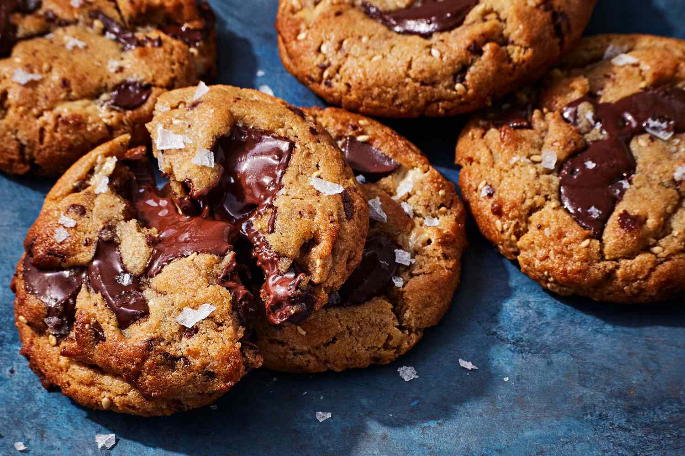
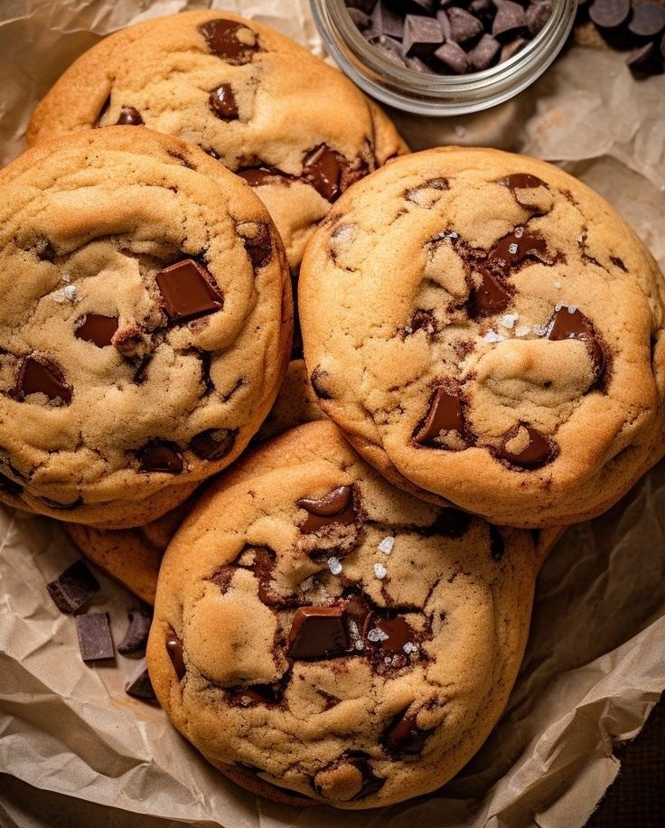

Indulge in the classic delight of chocolate chip cookies, a beloved treat that brings comfort and joy to every bite. With their golden, crispy edges and soft, gooey centers, these cookies are the perfect balance of sweet and savory. Whether enjoyed warm from the oven or stored for later, chocolate chip cookies are a timeless favorite for both kids and adults alike. This recipe will guide you through the simple steps to create your own batch of these irresistible cookies, making any occasion a little sweeter.


Prep time: 15 minutes Cook time: 12 minutes Serving: 10 cookies
INGREDIENTS
- 1/2 cups unsalted butter, melted and cooled
- 1/2 cup light brown sugar
- 1/3 cup granulated sugar
- 1 large egg
- 1 tbsp vanilla extract
- 1 1/4 cups all purpose flour
- 1/2 tsp baking soda
- Pinch of salt
- 1 1/2 cups semi sweet chocolate
INSTRUCTIONS
- Preheat the oven to 350°F and line a baking sheet with parchment paper.
- In a bowl mix flour, baking soda and salt, set aside.
- In a separate bowl add melted butter. Mix in brown and granulated sugar. Whisk for 1-2 minutes until it turns into a paste. Crack in the egg and vanilla mix until combined.
- Combine dry ingredients into the wet batter and gently fold in until just combined. Add chocolate chips and mix with spatula. Do not overmix the batter.
- Scoop out 10 cookies onto the parchment paper. Bake for 12 minutes.
- They should come out golden and crispy from the edges and gooey from the center. Sprinkle with sea salt and allow them to cool completely before serving.